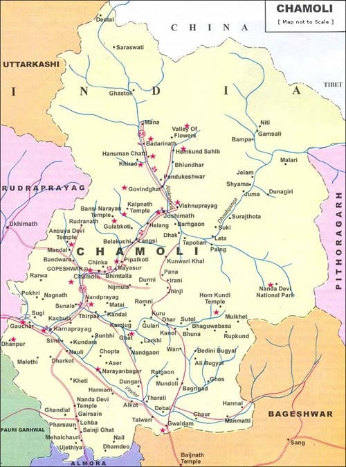

Wool Products – Chamoli

🧶 Product Description
Chamoli is renowned for its authentic and high-quality wool products, handwoven with care by local artisans. From cozy woolen shawls and mufflers to traditional carpets and jackets, these products are crafted using pure wool sourced from mountain sheep and goats. The wool is spun, dyed using natural herbs, and woven using traditional wooden looms. Known for durability, warmth, and artistic patterns, Chamoli's woolens reflect the heritage of the Himalayan region. The wool industry in Chamoli not only caters to local needs but also attracts national and international buyers for its eco-friendly, hand-crafted appeal.
📍 Origin, Speciality & Cultural Significance
The tradition of wool weaving in Chamoli dates back centuries, with skills passed down through generations. Women in remote villages spin and dye the wool, while men weave them into warm clothing or decorative items. The unique designs often feature geometric and floral patterns that are symbolic in Garhwali culture. The use of natural dyes from walnut husk, turmeric, and madder root gives each piece a distinctive, earthy tone. This cottage industry plays a vital role in empowering women and preserving indigenous knowledge while providing sustainable livelihoods in high-altitude regions.
📞 Contact & Purchase Info
To buy Chamoli wool products, contact Garhwal Wool Cooperative Society at 9759009830 or email alamcsd@gmail.com.
Visit the official store or explore seasonal exhibitions in Gopeshwar and Joshimath. These products are also available through certified ODOP online platforms.
🗺️ Chamoli District Map

🎉 Fun Facts & History
- The Bhotiya tribe in Chamoli has played a crucial role in preserving traditional wool crafts.
- Ancient trade routes connected Chamoli with Tibet, facilitating wool and pashmina exchanges.
- Wool weaving is considered a sacred art in many villages and often associated with local festivals.
- Woolen products from Chamoli are now exported to Europe and Japan as symbols of sustainable fashion.
- The natural warmth and hypoallergenic qualities of Himalayan wool make these products perfect for winter and sensitive skin.